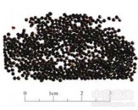

青葙子

拼音
Qīnɡ Xiānɡ Zǐ
别名
野鸡冠花、狗尾花、狗尾苋
来源
本品为苋科植物青葙Celosia argentea L. 的干燥成熟种子。秋季果实成熟时采割植株或摘取果穗，晒干，收集种子，除去杂质。
生境分布
生态环境：生于坡地、路边、平原较干燥的向阳处。 资源分布：全国大部分地区均有野生或栽培。
药材特点
一年生草本，高30-90cm。全株无毛。茎直立，通常上部分枝，绿色或红紫色，具条纹。单叶互生；叶柄长2-15mm，或无柄；叶片纸质，披针形或长圆状披外形，长5-9cm，宽1-3cm，先端尖或长尖，基部渐狭且稍下延，全缘。花着生甚密，初为淡红色，后变为银白色，穗状花序单生于茎项或分枝顶，呈圆柱形或圆锥形，长3-10cm，苞片、小苞片和花被片子膜质，白色光亮；花被片5，白色或粉红色，披针形；雄蕊5，下部合生成杯状，花药紫色。胞果卵状椭圆形，盖裂，上部作帽状脱落，顶端有宿存花柱，包在宿存花被片内。种子扁圆形，黑色，光亮。花期5-8月.果期6-10月。
性状
本品呈扁圆形，少数呈圆肾形，直径1～1.5mm。表面黑色或红黑色，光亮，中间微隆起，侧边微凹处有种脐。种皮薄而脆。无臭，无味。
性味
苦，微寒。
功能主治
清肝，明目，退翳。用于肝热目赤，眼生翳膜，视物昏花，肝火眩晕。
用法用量
9～15g。
化学成分
含脂肪油和丰富的硝酸钾，尚含烟酸。
药理作用
1：抗菌作用 品煎剂对绿脓杆菌有较强抑制作用：感染伤口经用10%煎剂，绿脓杆菌不再生长，对伤口无明显刺激
2：干粉能缩短家兔血浆再钙化时间
3：有降眼压作用 青葙子水煎液(每1ml相当于1g生药)对正常家兔瞳无明显影响：连续用药6天后，眼压有轻度下降，和对照组比较差异显着，但不能阻止水负荷后的眼压升高
摘录
《中国药典》